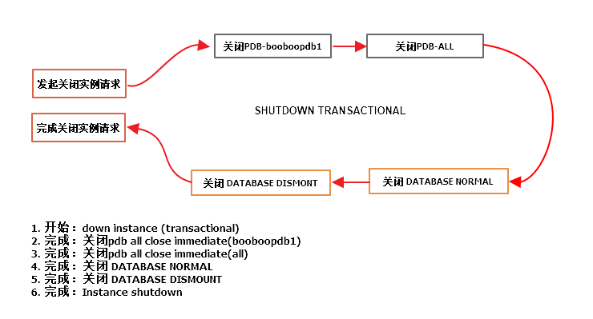
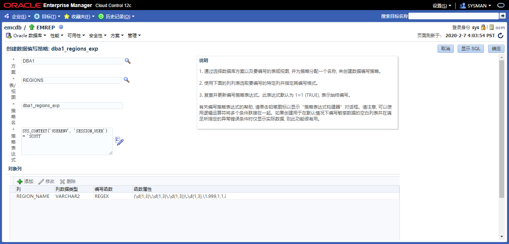
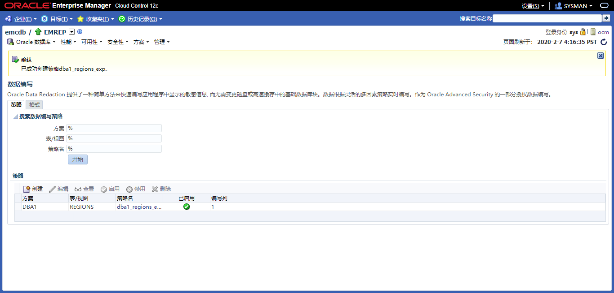
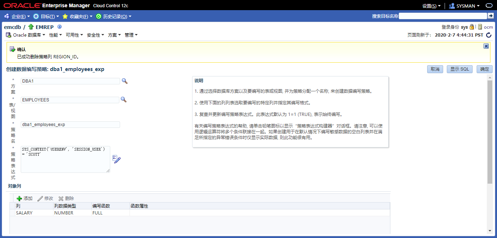
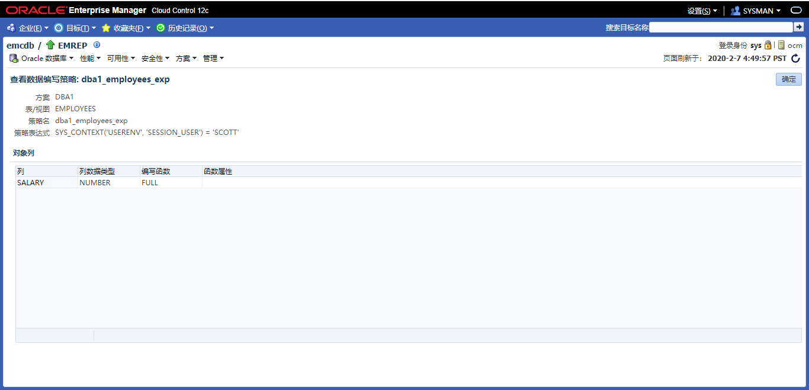
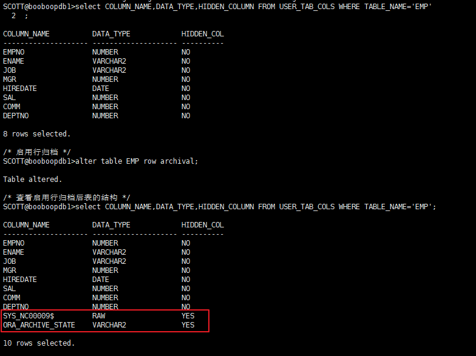
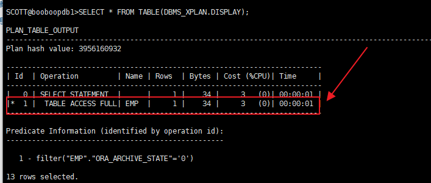

Practices for Lesson 2: Exploring Oracle Database Architecture
2020.01.29 BoobooWei
- 实践2:体系结构
- 实践2:概览
- 实践2-1:探索Oracle数据库体系结构
- 实践2-2:关闭数据库实例transactional
- 实践2-3:关闭数据库实例abort
- 实践2-4:隐藏列 invisible
- 实践2-5:存储过程DR和IR
- 实践2-6:参数DB_8K_CACHE_SIZE
- 实践2-7:参数ENABLE_DDL_LOGGING
- 实践2-8:Oracle Data Redaction
- 实践2-9:REDACTION_VALUES_FOR_TYPE_FULL
- 实践2-10:RMAN VALIDATE
- 实践2-11:V$RSRC_CONSUMER_GROUP
- 实践2-12:使用升级前信息工具
- 实践2-13:
STATISTICS_LEVEL指定数据库和操作系统统计信息的收集级别 - 实践2-14:Automatic Memory Management
- 实践2-15:Automatic Shared Memory Management
- 实践2-16:关于动态统计级别OPTIMIZER_DYNAMIC_SAMPLING
- 实践2-17:在数据库之间传输表空间Management
- 实践2-18:DB_FLASH_CACHE_FILE
- 实践2-19:在线缩小数据库段
- 实践2-20:数据库内归档In-Database Archiving
实践2:概览
Practices for Lesson 2: Overview
实践2-1:探索Oracle数据库体系结构
Practice 2-1: Exploring the Oracle Database Architecture
实践2-2:关闭数据库实例transactional
Overview
本实验的目的，了解关闭数据库实例的过程，实验中将使用shutdown transactional来关闭数据库。
Task
Practice
- 会话1：登陆pdb，执行insert 不提交事务
[oracle@oracle01 ~]$ sqlplus / as sysdba |
- 会话2：登陆cdb，执行create user c##test identified by oracle;
[oracle@oracle01 ~]$ sqlplus / as sysdba |
- 会话3：登陆cdb，执行 shutdown transactional 观察日志
[oracle@oracle01 ~]$ sqlplus / as sysdba |
观察日志
[oracle@oracle01 ~]$ adrci |
日志分析
2020-02-06 16:17:14.624000 +08:00 |
- 开始：down instance (transactional)
- 完成：关闭pdb all close immediate(booboopdb1)
- 完成：关闭pdb all close immediate(all)
- 完成：关闭 DATABASE NORMAL
- 完成：关闭 DATABASE DISMOUNT
- 完成：Instance shutdown
重新启动数据库后，发现事务并没有提交
|
KnowledgePoint

注意：虽然发起的关闭是 transactional ，但是在Oracle12c中，关闭PDB时使用的却是alter pluggable database all close immediate。因此不会等待PDB的事务提交即立刻关闭数据库。
实践2-3:关闭数据库实例abort
Overview
本实验的目的，了解关闭数据库实例的过程，实验中将使用shutdown abort来关闭数据库。
Task
Practice
关闭实例
SYS@booboo>shutdown abort
ORACLE instance shut down.
SYS@booboo>!date
Thu Feb 6 18:13:24 CST 2020
查看日志
Shutting down instance (abort) (OS id: 44076)
License high water mark = 6
USER (ospid: 44076): terminating the instance
Instance terminated by USER, pid = 44076
2020-02-06 18:13:18.716000 +08:00
Instance shutdown complete (OS id: 44076)KnowledgePoint
关闭速度非常快。
实践2-4:隐藏列 invisible
oracle 12c 新特性之不可见字段
在Oracle 11g R1中，Oracle以不可见索引和虚拟字段的形式引入了一些不错的增强特性。继承前者并发扬光大，Oracle 12c 中引入了不可见字段思想。在之前的版本中，为了隐藏重要的数据字段以避免在通用查询中显示，我们往往会创建一个视图来隐藏所需信息或应用某些安全条件。
在12c中，你可以在表中创建不可见字段。当一个字段定义为不可见时，这一字段就默认不会出现在通用查询中，除非在SQL语句或条件中有显式的提及这一字段，或是在表定义中有DESCRIBED。要添加或是修改一个不可见字段是非常容易的，反之亦然。
CREATE TABLE test_p (prod_id number(4), |
实践2-5:存储过程DR和IR
如何防止对CREATE_TEST存储过程具有EXECUTE特权的用户将值插入他们没有任何特权的表中？
Create the CREATE_TEST procedure with invoker rights.
oracle存储过程分两种，DR(Definer’s Rights ) Procedure和IR(Invoker’s Rights ) Procedure。
定义存储过程时，通过指定AUTHID 属性，定义DR Procedure 和IR Procedure
定义者权限：定义者权限PL/SQL程序单元是以这个程序单元拥有者的特权来执行它的，也就是说，任何具有这个PL/SQL程序单元执行权的用户都可以访问程序中的对象。所有具有执行权的用户都有相同的访问权限，在定义者权限下，执行的用户操作的schema为定义者，所操作的对象是定义者在编译时指定的对象。在定义者(definer)权限下，当前用户的权限为角色无效情况下所拥有的权限。
CREATE OR REPLACE procedure DEMO(ID in NUMBER)
AUTHID DEFINER as
...
BEGIN
...
ND DEMO
调用者权限：调用者权限是指当前用户（而不是程序的创建者）执行PL/SQL程序体的权限。这意味着不同的用户对于某个对象具有的权限很可能是不同的，这个思想的提出，解决了不同用户更新不同表的方法。在调用者权限下，执行的用户操作的schema为当前用户，所操作的对象是当前模式下的对象。在调用者(invoker)权限下，当前用户的权限为当前所拥有的权限(含角色)。
CREATE OR REPLACE procedure DEMO(ID in NUMBER)
AUTHID CURRENT_USER as
...
BEGIN
...
ND DEMOORACLE默认为定义者权限，定义者权限在存储过程中ROLE无效，需要显示授权，例如在存储过程中调用其他用户的表，但是定义存储过程的当前用户没有显示访问该表的权限，即使当前用户具有dba角色，编译过程中也会出现权限不足的问题，因为role无效。
实践2-6:参数DB_8K_CACHE_SIZE
查看参数
select * from V$SYSTEM_PARAMETER where name='db_8k_cache_size'; |
执行结果
NUM : 1447 |
- ISSYS_MODIFIABLE : IMMEDIATE
- 指示参数是否可以更改
ALTER SYSTEM以及更改何时生效：IMMEDIATE-ALTER SYSTEM无论用于启动实例的参数文件的类型如何，都可以更改参数。更改将立即生效。
DESCRIPTION : Size of cache for 8K buffers 8K缓冲区的缓存大小
实践2-7:参数ENABLE_DDL_LOGGING
当需要确定某些ddl操作什么时候发生，确定是表啥时间被动了，可以设置此参数。
--此参数支持动态调整 |
运行结果
- DDL日志明细xml格式文件：
less /u01/app/oracle/diag/rdbms/emcdb/emcdb/log/ddl/log.xml - DDL日志明细TXT格式文件：
less /u01/app/oracle/diag/rdbms/emcdb/emcdb/log/ddl_emcdb.log
[oracle@ocm log]$ pwd |
KnowledgePoint
ENABLE_DDL_LOGGING
https://docs.oracle.com/en/database/oracle/oracle-database/12.2/refrn/ENABLE_DDL_LOGGING.html
| Property | Description |
|---|---|
| Parameter type | Boolean |
| Default value | false |
| Modifiable | ALTER SESSION, ALTER SYSTEM |
| Modifiable in a PDB | Yes |
| Range of values | `true |
| Basic | No |
ENABLE_DDL_LOGGINGenables or disables the writing of a subset of data definition language (DDL) statements to a DDL log.- DDL日志是与警报日志具有相同格式和基本行为的文件，但它仅包含数据库发出的DDL语句。仅当RDBMS组件创建DDL日志，并且
ENABLE_DDL_LOGGING初始化参数设置为true。当此参数设置false为时，DDL语句不包含在任何日志中。 - 对于数据库发出的每个DDL语句，DDL日志均包含一个日志记录。DDL日志包含在IPS事件包中。
- 有两个DDL日志包含相同的信息。一个是XML文件，另一个是文本文件。DDL日志存储在
log/ddlADR主目录的子目录中。
当ENABLE_DDL_LOGGING设置true为时，将以下DDL语句写入日志：
ALTER/CREATE/DROP/TRUNCATE CLUSTERALTER/CREATE/DROP FUNCTIONALTER/CREATE/DROP INDEXALTER/CREATE/DROP OUTLINEALTER/CREATE/DROP PACKAGEALTER/CREATE/DROP PACKAGE BODYALTER/CREATE/DROP PROCEDUREALTER/CREATE/DROP PROFILEALTER/CREATE/DROP SEQUENCECREATE/DROP SYNONYMALTER/CREATE/DROP/RENAME/TRUNCATE TABLEALTER/CREATE/DROP TRIGGERALTER/CREATE/DROP TYPEALTER/CREATE/DROP TYPE BODYDROP USERALTER/CREATE/DROP VIEW
实践2-8:Oracle Data Redaction
Overview
Oracle Data Redaction 提供了一种简单方法来快速编写应用程序中显示的敏感信息, 而无需变更磁盘或高速缓存中的基础数据库块。数据根据灵活的多因素策略实时编写。作为 Oracle Advanced Security 的一部分授权数据编写。
本实验将学习如何配置一个数据编写策略并验证。
Task
- 使用DBA1用户，创建一个表regions
- 登陆到企业云管理平台，点击 安全 > 数据编辑，新建一个数据编辑策略。
- 使用scott用户访问dba1的regions表，查看是否生效
- 使用hr用户访问dba1的regions表，查看是否生效
Practice
使用DBA1用户，创建一个表regions
SQL> conn dba1/oracle@emrep
Connected.
SQL> desc regions;
Name Null? Type
----------------------------------------- -------- ----------------------------
REGION_ID NOT NULL NUMBER
REGION_NAME NOT NULL VARCHAR2(25)
SQL> select * from regions;
REGION_ID REGION_NAME
---------- -------------------------
1 Europe
2 Americas
3 Asia
4 Middle East and Africa
5 192.168.1.1
SQL> grant select on regions to hr;
SQL> grant select on regions to scott;
登陆到企业云管理平台，点击 安全 > 数据编辑 > 创建策略
要求，当scott用户访问
dba1.regions表时策略才会生效，具体策略如下表，含义为：如果region_name列匹配到ip地址，则变更更最后一位为999；否则不显示。col value schema DBA1 表/视图 REGIONS 策略名 dba1_regions_exp 策略表达式 SYS_CONTEXT(‘USERENV’, ‘SESSION_USER’) = ‘SCOTT’ 对象列 列数据类型 编写函数 函数属性 REGION_NAME VARCHAR2 REGEX (\d{1,3}\.\d{1,3}\.\d{1,3})\.\d{1,3},\1.999,1,1,i

BEGIN
BEGIN DBMS_REDACT.ADD_POLICY (OBJECT_SCHEMA => 'DBA1', object_name => 'REGIONS', policy_name => 'dba1_regions_exp', expression => 'SYS_CONTEXT(''USERENV'', ''SESSION_USER'') = ''SCOTT'''); END;
BEGIN DBMS_REDACT.ALTER_POLICY (OBJECT_SCHEMA => 'DBA1', object_name => 'REGIONS', policy_name => 'dba1_regions_exp', action => DBMS_REDACT.ADD_COLUMN, column_name => '"REGION_NAME"', function_type => DBMS_REDACT.REGEXP , regexp_pattern => (\d{1,3}\.\d{1,3}\.\d{1,3})\.\d{1,3},regexp_replace_string => \1.999,regexp_position => 1,regexp_occurrence => 1,regexp_match_parameter => i); END;
END;
/
使用scott用户访问dba1的regions表，查看是否生效
SQL> conn scott/tiger@emrep
Connected.
SQL> column region_name format a25
SQL> select * from dba1.regions;
REGION_ID REGION_NAME
---------- -------------------------
1
2
3
4
5 192.168.1.999id为5的行 region_name只显示了为ip的行，且对最后一个地址做了替换。说明成功了。
使用hr用户访问dba1的regions表，查看是否生效
SQL> conn hr/hr@emrep;
Connected.
SQL> column region_name format a25
SQL> select * from dba1.regions;
REGION_ID REGION_NAME
1 Europe
2 Americas
3 Asia
4 Middle East and Africa
5 192.168.1.1
可以看到规则对hr用户没有生效。
### KnowledgePoint
- [Oracle Data Redaction简介](https://docs.oracle.com/en/database/oracle/oracle-database/12.2/asoag/introduction-to-oracle-data-redaction.html#GUID-82EA9712-387C-4D3A-BB72-F64A707C67CA)
Oracle Data Redaction是实时编辑敏感数据的功能。
- [Oracle Data Redaction特性和功能](https://docs.oracle.com/en/database/oracle/oracle-database/12.2/asoag/oracle-data-redaction-features-and-capabilities.html#GUID-98B40084-EA10-4265-A6E5-D2EAC934E005)
Oracle Data Redaction提供了多种编辑不同类型数据的方法。
- [配置Oracle数据修订策略](https://docs.oracle.com/en/database/oracle/oracle-database/12.2/asoag/configuring-oracle-data-redaction-policies.html#GUID-78C0ECD1-388C-4E12-87C3-32FBC05F294D)
Oracle数据修订策略根据表列类型和要使用的修订类型定义如何对列中的数据进行修订。
- [在Oracle Enterprise Manager中管理Oracle Data Redaction策略](https://docs.oracle.com/en/database/oracle/oracle-database/12.2/asoag/using-oracle-data-redaction-in-oracle-enterprise-manager.html#GUID-8267183A-1778-428E-9B6E-AB06D8CC7EAB)
Oracle Enterprise Manager Cloud Control（云控制）可以管理Oracle Data Redaction策略和格式。
- [将Oracle Data Redaction与Oracle数据库功能](https://docs.oracle.com/en/database/oracle/oracle-database/12.2/asoag/oracle-data-redaction-use-with-oracle-database-features.html#GUID-D0C97997-0F35-42B7-98B1-1DA4197001F0)
一起使用Oracle Data Redaction可以与其他Oracle功能一起使用，但是某些Oracle功能可能对Oracle Data Redaction有限制。
- [Oracle Data Redaction的安全注意事项](https://docs.oracle.com/en/database/oracle/oracle-database/12.2/asoag/security-considerations-for-using-oracle-data-redaction.html#GUID-1D2850E8-2485-4C3D-BBF2-75E2CFAC3F37)
Oracle提供了使用Oracle Data Redaction的准则。
## 实践2-9:REDACTION_VALUES_FOR_TYPE_FULL
### Overview
通过DBMS_REDACT.REDACTION_VALUES_FOR_TYPE_FULL 此过程修改“数据修订”策略的数值默认显示值以进行完整修订。
### Task
1. 修改redaction_values_for_type_full的NUMBER_VALUE为-1（pdb中操作）
2. 登陆云管理控制台添加策略，scott用户访问dba1.employees表时，看不到真实的salary。看到的都是-1。
3. 使用scott用户测试是否策略生效。
4. 重启服务
5. 使用scott用户测试是否策略生效。
### Practice
1. 修改redaction_values_for_type_full的NUMBER_VALUE为-1
```sql
SQL> conn / as sysdba
Connected.
SQL>SQL> conn / as sysdba
Connected.
SQL> alter session set container=emrep;
Session altered.
SQL> select number_value from redaction_values_for_type_full;
NUMBER_VALUE
------------
0
SQL> exec dbms_redact.update_full_redaction_values(-1)
PL/SQL procedure successfully completed.
SQL> select number_value from redaction_values_for_type_full;
NUMBER_VALUE
------------
-1
select number_value from redaction_values_for_type_full;
NUMBER_VALUE
------------
0
SQL> exec dbms_redact.update_full_redaction_values(-1)
PL/SQL procedure successfully completed.
SQL> select number_value from redaction_values_for_type_full;
NUMBER_VALUE
------------
-1
登陆云管理控制台添加策略


BEGIN
BEGIN DBMS_REDACT.ADD_POLICY (OBJECT_SCHEMA => 'DBA1', object_name => 'EMPLOYEES', policy_name => 'dba1_employees_exp', expression => 'SYS_CONTEXT(''USERENV'', ''SESSION_USER'') = ''SCOTT'''); END;
BEGIN DBMS_REDACT.ALTER_POLICY (OBJECT_SCHEMA => 'DBA1', object_name => 'EMPLOYEES', policy_name => 'dba1_employees_exp', action => DBMS_REDACT.ADD_COLUMN, column_name => '"SALARY"', function_type => DBMS_REDACT.FULL ); END;
END;
使用scott用户测试是否策略生效。
SQL> conn scott/tiger@emrep;
Connected.
SQL> desc dba1.employees;
Name Null? Type
----------------------------------------- -------- ----------------------------
EMPLOYEE_ID NOT NULL NUMBER(6)
FIRST_NAME VARCHAR2(20)
LAST_NAME NOT NULL VARCHAR2(25)
EMAIL NOT NULL VARCHAR2(25)
PHONE_NUMBER VARCHAR2(20)
HIRE_DATE NOT NULL DATE
JOB_ID NOT NULL VARCHAR2(10)
SALARY NUMBER(8,2)
COMMISSION_PCT NUMBER(2,2)
MANAGER_ID NUMBER(6)
DEPARTMENT_ID NUMBER(4)
SQL> select employee_id,first_name,salary from dba1.employees where rownum < 5;
EMPLOYEE_ID FIRST_NAME SALARY
----------- -------------------- ----------
198 Donald 0
199 Douglas 0
200 Jennifer 0
201 Michael 0发现salary显示的时0而不是-1。
重启服务
SQL> shutdown immediate
Database closed.
Database dismounted.
ORACLE instance shut down.
SQL> startup
ORACLE instance started.
Total System Global Area 838860800 bytes
Fixed Size 8798312 bytes
Variable Size 490737560 bytes
Database Buffers 331350016 bytes
Redo Buffers 7974912 bytes
Database mounted.
Database opened.
使用scott用户测试是否策略生效。
SQL> conn scott/tiger@emrep;
Connected.
SQL> select employee_id,first_name,salary from dba1.employees where rownum < 5;
EMPLOYEE_ID FIRST_NAME SALARY
----------- -------------------- ----------
198 Donald -1
199 Douglas -1
200 Jennifer -1
201 Michael -1
SQL> conn hr/hr@emrep;
Connected.
SQL> select employee_id,first_name,salary from dba1.employees where rownum < 5;
EMPLOYEE_ID FIRST_NAME SALARY
----------- -------------------- ----------
198 Donald 2600
199 Douglas 2600
200 Jennifer 4400
201 Michael 13000重启后已生效，数字类型的salary列全部显示为 -1。
KnowledgePoint
提示与技巧：Oracle Database 12c 中的数据编辑
简介
Oracle Data Redaction 是 Oracle Database 12c 引入的一个新特性。这个新特性是 Advanced Security 选件的一部分，可以实时保护显示给用户的数据，无需更改应用。
Oracle Database 12c 在执行查询时应用保护。存储的数据保持不变，要显示的数据则在离开数据库前动态转换。
不要将此特性与自版本 11g 起提供的 Oracle Data Masking 混淆。采用 Oracle Data Masking 时，将以屏蔽形式处理数据，更新后的数据存储在新数据块中。因此，Data Masking 更适合非生产环境。
下面是已有的其他一些有助于提高数据安全性的特性：
- 虚拟专用数据库 (VPD) — 通过向针对数据库执行的 SQL 语句动态添加谓词，控制行级和列级访问。
- Oracle Label Security — 允许向表记录添加用户定义的值。与 VPD 相结合，可以更精细地控制访问用户和访问内容。
- Database Vault — 数据编辑不能防止特权用户（如 DBA）访问受保护的数据。为解决此问题，您可以利用 Database Vault。
从许可角度来说，Oracle Data Masking 仅适用于企业版数据库，且需要 Advanced Security 许可。
工作原理
我们可以创建编辑策略，指定必须满足哪些条件后才能对数据进行编辑并将其返回给用户。定义此类策略期间，DBA 可以指定必须对哪些列应用何种类型的保护。
用于创建保护规则的软件包名为 DBMS_REDACT。它包括五个用于管理规则的过程，以及一个用于更改完全编辑策略默认值的过程。
- DBMS_REDACT.ALTER_POLICY — 允许更改现有策略。
- DBMS_REDACT.DISABLE_POLICY — 禁用现有策略。
- DBMS_REDACT.DROP_POLICY — 删除现有策略。
- DBMS_REDACT.ENABLE_POLICY — 启用现有策略。
- DBMS_REDACT.UPDATE_FULL_REDACTION_VALUES — 更改完全编辑的默认返回值。必须重启数据库才能生效。
DBMS_REDACT.REDACTION_VALUES_FOR_TYPE_FULL
DBMS_REDACT.REDACTION_VALUES_FOR_TYPE_FULL 此过程将修改“数据修订”策略的默认显示值以进行完整修订。
句法
DBMS_REDACT.UPDATE_FULL_REDACTION_VALUES（ |
参量
表121-11 UPDATE_FULL_REDACTION_VALUES过程参数
| 参数 | 描述 |
|---|---|
number_val |
修改NUMBER数据类型列的默认值 |
binfloat_val |
修改BINARY_FLOAT数据类型列的默认值 |
bindouble_val |
修改BINARY_DOUBLE数据类型列的默认值 |
char_val |
修改CHAR数据类型列的默认值 |
varchar_val |
修改VARCHAR2数据类型列的默认值 |
nchar_val |
修改NCHAR数据类型列的默认值 |
nvarchar_val |
修改NVARCHAR2数据类型列的默认值 |
date |
修改DATE数据类型列的默认值 |
ts_val |
修改TIMESTAMP数据类型列的默认值 |
tswtz_val |
修改TIMESTAMP WITH TIME ZONE数据类型列的默认值 |
blob_val |
修改BLOB数据类型列的默认值 |
clob_val |
修改CLOB数据类型列的默认值 |
nclob_val |
修改NCLOB数据类型列的默认值 |
例外情况
ORA-28082-参数参数是无效的（其中，可能的值是char_val，nchar_val，varchar_val和nvarchar_val）
BINARY_DOUBLE_VALUE
例如，如果将修订策略应用于类型为的列，BINARY_DOUBLE并且修订类型为完全修订，则该列将使用BINARY_DOUBLE_VALUE此视图的列中显示的值进行编辑。
| 列 | 数据类型 | 空值 | 描述 |
|---|---|---|---|
NUMBER_VALUE |
NUMBER |
NOT NULL |
对NUMBER列进行完全修订的修订结果 |
BINARY_FLOAT_VALUE |
BINARY_FLOAT |
NOT NULL |
对BINARY_FLOAT列进行完全修订的修订结果 |
BINARY_DOUBLE_VALUE |
BINARY_DOUBLE |
NOT NULL |
对BINARY_DOUBLE列进行完全修订的修订结果 |
CHAR_VALUE |
VARCHAR2(1) |
对CHAR列进行完全修订的修订结果 | |
VARCHAR_VALUE |
VARCHAR2(1) |
对VARCHAR2列进行完全修订的修订结果 | |
NCHAR_VALUE |
NCHAR(1) |
对NCHAR列进行完全修订的修订结果 | |
NVARCHAR_VALUE |
NVARCHAR2(1) |
用于NVARCHAR2列的完整修订的修订结果 | |
DATE_VALUE |
DATE |
NOT NULL |
用于DATE列的完整修订的修订结果 |
TIMESTAMP_VALUE |
TIMESTAMP(6) |
NOT NULL |
对TIMESTAMP列进行完全修订的修订结果 |
TIMESTAMP_WITH_TIME_ZONE_VALUE |
TIMESTAMP(6) WITH TIME ZONE |
NOT NULL |
对TIMESTAMP WITH TIME ZONE列进行完全修订的修订结果 |
BLOB_VALUE |
BLOB |
对BLOB列进行完全修订的修订结果 | |
CLOB_VALUE |
CLOB |
对CLOB列进行完全修订的修订结果 | |
NCLOB_VALUE |
NCLOB |
对NCLOB列进行完全修订的修订结果 |
实践2-10:RMAN VALIDATE
Overview
Task
Practice
KnowledgePoint
目的
使用该VALIDATE命令检查损坏的块和丢失的文件，或确定是否可以还原备份集。
如果VALIDATE在验证期间检测到问题，则RMAN会显示该问题并触发执行故障评估。如果检测到故障，则RMAN将其记录到自动化诊断系统信息库。您可以LIST FAILURE用来查看失败。
先决条件
目标数据库必须已安装或打开。
使用说明
VALIDATE命令中的选项在语义上等效于命令中的选项BACKUP VALIDATE。BACKUP VALIDATE但是，与VALIDATE可以不同的是，它可以检查单个备份集和数据块。
该VALIDATE命令在验证期间不会跳过任何块。如果RMAN由于未使用的块压缩而未读取块，并且如果该块已损坏，则RMAN不会检测到损坏。损坏的未使用块无害。
在物理损坏中，数据库根本无法识别该块。在逻辑损坏中，块的内容在逻辑上不一致。默认情况下，该VALIDATE命令仅检查物理损坏。您也可以指定CHECK LOGICAL检查逻辑损坏。RMAN填充V$DATABASE_BLOCK_CORRUPTION 查看其发现。
块损坏可分为块间损坏和块内损坏。在块内损坏中，损坏发生在块本身内，并且可以是物理或逻辑损坏。在块间损坏中，损坏发生在块之间，并且只能是逻辑损坏。该VALIDATE命令仅检查块内损坏。
实践2-11:V$RSRC_CONSUMER_GROUP
Overview
Task
Practice
select name,active_sessions,queue_length,consumed_cpu_time,cpu_waits,cpu_wait_time from v$rsrc_consumer_group; |
- name：消费群体名称
- active_sessions：消费者组中当前活动的会话数
- queue_length：队列中等待的会话数
- consumed_cpu_time：使用者组中所有会话消耗的CPU时间累积量（以毫秒为单位）
- cpu_waits：由于资源管理，使用者组中所有会话必须等待CPU的累积次数。这不包括由于闩锁或排队争用而引起的等待，I / O等待等。当不主动管理CPU资源时，此值设置为零。
- cpu_wait_time：由于资源管理，会话等待CPU的累计时间。这不包括由于闩锁或排队争用而引起的等待，I / O等待等。当不主动管理CPU资源时，此值设置为零。
KnowledgePoint
V$RSRC_CONSUMER_GROUP 显示与当前活动的资源使用者组有关的数据。
将STATISTICS_LEVEL设置为TYPICAL或时ALL，即使未设置Resource Manager计划或Resource Manager计划不监视CPU或会话资源，此视图也包含有关CPU利用率和等待时间的信息。
V$RSRC_CONSUMER_GROUP当可插拔数据库（PDB）更改其资源计划时，将重置统计信息。它们不受多租户容器数据库（CDB）资源计划更改的影响。
由于可以在不同的PDB之间独立设置PDB计划，V$RSRC_CONSUMER_GROUP因此不会在不同的PDB中覆盖相同的时间段。因此，此视图对于比较不同PDB之间的统计信息没有用。
| 柱 | 数据类型 | 描述 |
|---|---|---|
ID |
NUMBER |
使用者组对象ID（唯一的数字，在数据库关闭和启动期间保持一致） |
NAME |
VARCHAR2(32) |
消费群体名称 |
ACTIVE_SESSIONS |
NUMBER |
消费者组中当前活动的会话数 |
EXECUTION_WAITERS |
NUMBER |
等待执行时间片的当前活动会话数，在这些时间段中将可以使用CPU |
REQUESTS |
NUMBER |
在使用者组中执行的累计请求数 |
CPU_WAIT_TIME |
NUMBER |
由于资源管理，会话等待CPU的累计时间。这不包括由于闩锁或排队争用而引起的等待，I / O等待等。当不主动管理CPU资源时，此值设置为零。 |
CPU_WAITS |
NUMBER |
由于资源管理，使用者组中所有会话必须等待CPU的累积次数。这不包括由于闩锁或排队争用而引起的等待，I / O等待等。当不主动管理CPU资源时，此值设置为零。 |
CONSUMED_CPU_TIME |
NUMBER |
使用者组中所有会话消耗的CPU时间累积量（以毫秒为单位） |
YIELDS |
NUMBER |
由于数量到期，使用者组中的会话必须让CPU放弃其他会话的累积次数。当不主动管理CPU资源时，此值设置为零。 |
CPU_DECISIONS |
NUMBER |
使用者组所在的CPU决策百分比。当不主动管理CPU资源时，此值设置为零。 |
CPU_DECISIONS_EXCLUSIVE |
NUMBER |
存在使用者组并且是唯一的使用者组的CPU决策百分比。当不主动管理CPU资源时，此值设置为零。 |
CPU_DECISIONS_WON |
NUMBER |
消费者组赢得的CPU决策百分比。当不主动管理CPU资源时，此值设置为零。 |
QUEUE_LENGTH |
NUMBER |
队列中等待的会话数 |
CURRENT_UNDO_CONSUMPTION |
NUMBER |
消费者组当前消耗的撤消量（以KB为单位） |
ACTIVE_SESSION_LIMIT_HIT |
NUMBER |
由于使用者组达到其活动会话限制，使用者组中的会话排队的次数 |
UNDO_LIMIT_HIT |
NUMBER |
由于使用者组达到其UNDO_POOL限制 而取消了使用者组中的查询的次数 |
SWITCHES_IN_CPU_TIME |
NUMBER |
由于资源管理器计划的SWITCH_TIME限制， 进入使用者组的切换数 |
SWITCHES_OUT_CPU_TIME |
NUMBER |
由于资源管理器计划的SWITCH_TIME限制 ，不在使用者组中的交换机数量 |
SWITCHES_IN_IO_MEGABYTES |
NUMBER |
由于资源管理器计划的SWITCH_IO_MEGABYTES限制， 进入使用者组的切换数 |
SWITCHES_OUT_IO_MEGABYTES |
NUMBER |
由于资源管理器计划的SWITCH_IO_MEGABYTES限制 ，不在使用者组中的交换机数量 |
SWITCHES_IN_IO_REQUESTS |
NUMBER |
由于资源管理器计划的SWITCH_IO_REQS限制， 进入使用者组的切换数 |
SWITCHES_OUT_IO_REQUESTS |
NUMBER |
由于资源管理器计划的SWITCH_IO_REQS限制 ，不在使用者组中的交换机数量 |
SWITCHES_IN_IO_LOGICAL |
NUMBER |
由于资源管理器计划的SWITCH_IO_LOGICAL限制， 进入使用者组的切换数 |
SWITCHES_OUT_IO_LOGICAL |
NUMBER |
由于资源管理器计划的SWITCH_IO_LOGICAL限制 ，不在使用者组中的交换机数量 |
SWITCHES_IN_ELAPSED_TIME |
NUMBER |
由于资源管理器计划的SWITCH_ELAPSED_TIME限制， 进入使用者组的切换数 |
SWITCHES_OUT_ELAPSED_TIME |
NUMBER |
由于资源管理器计划的SWITCH_ELAPSED_TIME限制 ，不在使用者组中的交换机数量 |
SQL_CANCELED |
NUMBER |
在使用者组中运行的SQL查询由于超出资源管理器计划的SWITCH_TIME限制CANCEL_SQL并被指定为资源管理器计划的中止而被中止的次数SWITCH_GROUP |
ACTIVE_SESSIONS_KILLED |
NUMBER |
在使用者组中运行的会话由于超出资源管理器计划的SWITCH_TIME限制KILL_SESSION并被指定为资源管理器计划的会话而被终止的次数SWITCH_GROUP |
IDLE_SESSIONS_KILLED |
NUMBER |
消费者组中的会话由于空闲时间太长（达到MAX_IDLE_TIME）而 被杀死的次数 |
IDLE_BLKR_SESSIONS_KILLED |
NUMBER |
消费者组中的会话因空闲时间太长（达到MAX_IDLE_BLOCKER_TIME）并阻止其他会话而被杀死的次数 |
QUEUED_TIME |
NUMBER |
由于活动会话限制，使用者组中的会话在“排队”状态下所花费的总时间（以毫秒为单位） |
QUEUE_TIME_OUTS |
NUMBER |
消费者组中的会话请求排队时间过长（达到QUEUEING_P1）而 超时的次数 |
IO_SERVICE_TIME |
NUMBER |
累积I / O等待时间（以毫秒为单位） |
IO_SERVICE_WAITS |
NUMBER |
等待请求总数 |
SMALL_READ_MEGABYTES |
NUMBER |
读取的单块兆字节数 |
SMALL_WRITE_MEGABYTES |
NUMBER |
写入的单块兆字节数 |
LARGE_READ_MEGABYTES |
NUMBER |
读取的多块兆字节数 |
LARGE_WRITE_MEGABYTES |
NUMBER |
写入的多块兆字节数 |
SMALL_READ_REQUESTS |
NUMBER |
单块读取请求数 |
SMALL_WRITE_REQUESTS |
NUMBER |
单块写入请求数 |
LARGE_READ_REQUESTS |
NUMBER |
多块读取请求数 |
LARGE_WRITE_REQUESTS |
NUMBER |
多块写入请求数 |
CURRENT_PQS_ACTIVE |
NUMBER |
使用者组中活动并行语句的数量。此值不包括永不排队的并行语句，例如GV $查询。 |
CURRENT_PQ_SERVERS_ACTIVE |
NUMBER |
使用者组中活动并行服务器的数量。此值不包括运行从未排队的并行语句的服务器，例如GV $查询。 |
PQS_QUEUED |
NUMBER |
尝试运行并行语句时，使用者组中的会话排队的次数 |
PQS_COMPLETED |
NUMBER |
使用者组中已完成的并行语句总数 |
PQ_SERVERS_USED |
NUMBER |
使用者组中已完成的并行语句使用的并行服务器总数 |
PQ_ACTIVE_TIME |
NUMBER |
使用者组中所有已完成的并行语句的并行活动时间的累积总和（以毫秒为单位） |
CURRENT_PQS_QUEUED |
NUMBER |
使用者组中正在尝试运行并行语句的并行语句队列中正在等待的会话数 |
PQ_QUEUED_TIME |
NUMBER |
尝试运行并行语句时，使用者组中的会话排队的总时间（以毫秒为单位） |
PQ_QUEUE_TIME_OUTS |
NUMBER |
消费方组中的会话的并行语句由于队列时间超出资源管理器计划的PARALLEL_QUEUE_TIMEOUT限制而 超时的次数 |
CON_ID |
NUMBER |
数据所属的容器的ID。可能的值包括：0：此值用于包含与整个CDB有关的数据的行。此值也用于非CDB中的行。1：此值用于包含仅与根相关的数据的行n：其中n是包含数据的行的适用容器ID |
也可以看看：
- “ STATISTICS_LEVEL ”
- “ V $ RSRC_PDB ”
- 《 Oracle数据库管理员指南》中有关资源组的信息
- 《 Oracle数据库PL / SQL软件包和类型参考》，以获取有关使用
DBMS_RESOURCE_MANAGER软件包 创建资源组的信息
实践2-12:使用升级前信息工具
Overview
Task
Practice
KnowledgePoint
在安装了适用于Oracle Database 11 g第2版（11.2）的软件和所有必需的修补程序之后，Oracle建议您分析数据库，然后再将其升级到新版本。这是通过在要升级的数据库环境中运行“升级前信息工具”来完成的。升级前信息工具是Oracle数据库11 g第2版（11.2）软件随附的SQL脚本。如果您要手动升级，则这是必需的步骤。否则，catupgrd.sql脚本将以错误终止。如果要使用DBUA进行升级，还建议运行“升级前信息工具”，以便可以预览DBUA检查的项目。
这些主题包含有关升级前信息工具的其他信息：
实践2-13:STATISTICS_LEVEL指定数据库和操作系统统计信息的收集级别
Overview
Task
查看你环境中该参数的值
SQL> conn dba1/oracle@emrep
SQL> show parameter STATISTICS_LEVEL
NAME TYPE VALUE
------------------------------------ ----------- ------------------------------
statistics_level string TYPICAL
SQL>
- 说出参数的含义
Practice
KnowledgePoint
STATISTICS_LEVEL指定数据库和操作系统统计信息的收集级别。Oracle数据库出于各种目的收集这些统计信息，包括制定自我管理决策。
| 属性 | 描述 |
|---|---|
| 参数类型 | 串 |
| 句法 | `STATISTICS_LEVEL = { ALL |
| 默认值 | TYPICAL |
| 可修改的 | ALTER SESSION， ALTER SYSTEM |
| 可在PDB中修改 | 是 |
| 基本的 | 没有 |
默认设置TYPICAL确保确保收集数据库自我管理功能所需的所有主要统计信息，并提供最佳的整体性能。对于大多数环境，默认值应该足够。
当STATISTICS_LEVEL参数设置为时ALL，其他统计信息将添加到使用该设置收集的统计信息集中TYPICAL。其他统计信息是定时操作系统统计信息和计划执行统计信息。
将STATISTICS_LEVEL参数设置为BASIC禁用会禁用Oracle数据库功能所需的许多重要统计信息的收集，包括：
- 自动工作量存储库（AWR）快照
- 自动数据库诊断监视器（ADDM）
- 所有服务器生成的警报
- 自动SGA内存管理
- 自动优化器统计信息收集
- 对象级统计
- 端到端应用程序跟踪（
V$CLIENT_STATS） - 数据库时间分布统计（
V$SESS_TIME_MODEL和V$SYS_TIME_MODEL） - 服务水平统计
- 缓冲区高速缓存咨询
- MTTR咨询
- 共享池大小调整咨询
- 段级别统计
- PGA目标咨询
- 定时统计
- 监测统计
注意：
Oracle强烈建议您不要禁用这些重要的功能。
通过STATISTICS_LEVEL修改参数后ALTER SYSTEM，根据的新值，所有建议或统计信息都会动态打开或关闭STATISTICS_LEVEL。当被修改时ALTER SESSION，以下咨询或统计信息仅在本地会话中打开或关闭。它们在系统范围内的状态不变：
- 定时统计
- 定时操作系统统计信息
- 计划执行统计
该V$STATISTICS_LEVEL视图显示有关由STATISTICS_LEVEL参数控制的统计信息或咨询状态的信息。请参见“ V $ STATISTICS_LEVEL ”。
也可以看看：
Oracle Database Performance Tuning Guide有关此参数的更多信息
实践2-14:Automatic Memory Management
Overview
Task
Practice
SQL> select COMPONENT from V$MEMORY_DYNAMIC_COMPONENTS; |
KnowledgePoint
关于自动内存管理
管理实例内存的最简单方法是允许Oracle数据库实例为您自动管理和调整它。为此（在大多数平台上），您只需设置目标内存大小初始化参数（MEMORY_TARGET）和可选的最大内存大小初始化参数（MEMORY_MAX_TARGET）。
动态性能视图V$MEMORY_DYNAMIC_COMPONENTS显示所有动态调整的内存组件的当前大小，包括SGA和实例PGA的总大小。
实践2-15:Automatic Shared Memory Management
Overview
Task
Practice
KnowledgePoint
自动共享内存管理简化了SGA内存管理。
- 关于自动共享内存管理
使用自动共享内存管理，您可以使用SGA_TARGET初始化参数指定实例可用的SGA内存总量，并且Oracle数据库会自动在各种SGA组件之间分配此内存，以确保最有效的内存利用率。 - SGA中
的组件和颗粒 SGA包含几个内存组件，它们是用于满足特定类别的内存分配请求的内存池。 - 设置最大SGA大小
的SGA_MAX_SIZE初始化参数指定系统全局区的该实例的生命周期的最大尺寸。 - 设置SGA目标大小
您可以通过将SGA_TARGET初始化参数设置为非零值来启用自动共享内存管理功能。此参数设置SGA的总大小。它替换了控制为一组特定的单个组件分配的内存的参数，这些参数现在可以根据需要自动动态调整大小（调整）。 - 启用自动共享内存管理
启用自动共享内存管理（ASMM）的过程取决于您是从手动共享内存管理还是从自动内存管理更改为ASMM。 - 设置
自动调整大小的SGA组件的最小值您可以通过为与这些大小相对应的参数指定最小值来对自动调整大小的SGA组件的大小进行一些控制。如果您知道没有特定组件中的最小内存，应用程序将无法正常运行，则这样做很有用。 - SGA_TARGET
的动态修改SGA_TARGET可以将参数动态增加到为该SGA_MAX_SIZE参数指定的值，也可以减少该参数。 - 修改自动调整大小的组件的参数
启用自动共享内存管理后，手动指定的自动调整大小的组件大小将作为组件大小的下限。您可以通过更改相应参数的值来动态修改此限制。 - 修改手动调整大小的零部件的
参数手动调整大小的零部件的参数也可以动态更改。但是，该参数的值不是设置最小大小，而是指定相应组件的精确大小。
也可以看看：
- 《 Oracle数据库性能调优指南》中有关调优SGA组件的信息
实践2-16:关于动态统计级别OPTIMIZER_DYNAMIC_SAMPLING
Overview
Task
Practice
KnowledgePoint
OPTIMIZER_DYNAMIC_SAMPLING 控制数据库何时收集动态统计信息以及优化器用来收集统计信息的样本大小。
| 属性 | 描述 |
|---|---|
| 参数类型 | 整数 |
| 默认值 | 如果OPTIMIZER_FEATURES_ENABLE设置为10.0.0或更高，则2如果OPTIMIZER_FEATURES_ENABLE设置为9.2.0，则1如果OPTIMIZER_FEATURES_ENABLE设置为9.0.1或更低，则0 |
| 可修改的 | ALTER SESSION， ALTER SYSTEM |
| 可在PDB中修改 | 是 |
| 取值范围 | 0 至 11 |
| 基本的 | 没有 |
注意：
在Oracle Database 12c第1版（12.1）之前的版本中，动态统计信息称为动态采样。
如果将的值OPTIMIZER_DYNAMIC_SAMPLING设置为11，则该OPTIMIZER_FEATURES_ENABLE设置对设置无效OPTIMIZER_DYNAMIC_SAMPLING。
该动态统计级别控制都在数据库云集动态统计和样本，优化程序使用，收集统计数据的大小。
使用OPTIMIZER_DYNAMIC_SAMPLING初始化参数或语句提示来设置动态统计信息级别。
注意：
在Oracle Database 12c第1版（12.1）之前的版本中，动态统计信息称为动态采样。
下表描述了动态统计信息的级别。请注意以下几点：
- 如果启用了动态统计信息，则当SQL语句使用并行执行时，数据库可以选择使用动态统计信息。
- 如果
OPTIMIZER_ADAPTIVE_STATISTICS为TRUE，则当存在相关的SQL计划指令时，优化器将使用动态统计信息。数据库将结果统计信息保存在SQL计划指令存储中，以使其可用于其他查询。
表12-5动态统计级别
| 水平 | 当优化器使用动态统计信息时 | 样本量（块） |
|---|---|---|
| 0 | 不要使用动态统计信息。 | 不适用 |
| 1 | 对所有没有统计信息的表使用动态统计信息，但前提是必须满足以下条件：查询中至少有一个非分区表没有统计信息。该表没有索引。该表中的块数多于用于此表的动态统计信息的块数。 | 32 |
| 2 | 如果语句中至少有一个表没有统计信息，请使用动态统计信息。这是默认值。 | 64 |
| 3 | 如果满足以下任一条件，请使用动态统计信息：该语句中至少有一个表没有统计信息。该语句具有一个或多个WHERE子句谓词中使用的表达式，例如WHERE SUBSTR(CUSTLASTNAME,1,3)。 |
64 |
| 4 | 如果满足以下任一条件，请使用动态统计信息：该语句中至少有一个表没有统计信息。该语句具有一个或多个WHERE子句谓词中使用的表达式，例如WHERE SUBSTR(CUSTLASTNAME,1,3)。该语句使用复杂谓词（同一表上多个谓词之间的OR或AND运算符）。 |
64 |
| 5 | 标准与第4级相同，但是数据库使用不同的样本量。 | 128 |
| 6 | 标准与第4级相同，但是数据库使用不同的样本量。 | 256 |
| 7 | 标准与第4级相同，但是数据库使用不同的样本量。 | 512 |
| 8 | 标准与第4级相同，但是数据库使用不同的样本量。 | 1024 |
| 9 | 标准与第4级相同，但是数据库使用不同的样本量。 | 4086 |
| 10 | 标准与第4级相同，但是数据库使用不同的样本量。 | 所有块 |
| 11 | 当优化器认为必要时，数据库会自动使用自适应动态采样。 | 自动确定 |
也可以看看：
- “ 当数据库采样数据时 ”
- Oracle数据库参考，了解
OPTIMIZER_DYNAMIC_SAMPLING初始化参数 - 《 Oracle数据库SQL调优指南》中提供了有关可以为
OPTIMIZER_DYNAMIC_SAMPLING参数设置的值（0 – 11）的详细信息。
实践2-17:在数据库之间传输表空间Management
Overview
Task
Practice
KnowledgePoint
您可以在数据库之间传输表空间。
注意：
要将可传输表空间集导入到不同平台上的Oracle数据库中，两个数据库的兼容性必须至少设置为10.0.0。有关跨发行版传输表空间的数据库兼容性的讨论，请参见“ 传输数据的兼容性注意事项 ”。
- 可传输表空间简介
可以使用可传输表空间功能将一组表空间从一个Oracle数据库复制到另一个。 - 可传输表空间
的限制可传输表空间有限制。 - 在数据库之间传输表空间
您可以在数据库之间传输表空间。
在数据库之间传输表空间的步骤：
您可以在数据库之间传输表空间。
以下任务列表总结了传输表空间的过程。在随后的示例中提供了每个任务的详细信息。
选择一组独立的表空间。
在源数据库中，将表空间集设置为只读模式，并生成可传输表空间集。
可传输表空间集（或可传输集）由要传输的表空间集的数据文件和包含表空间集的结构信息（元数据）的导出转储文件组成。您使用数据泵执行导出。
传输导出转储文件。
将导出转储文件复制到目标数据库可访问的位置。
传输表空间集。
将数据文件复制到目标数据库可访问的位置。
如果源平台和目标平台不同，则通过运行在所述查询检查每个平台的endian格式
V$TRANSPORTABLE_PLATFORM视图在“ 传输数据跨平台 ”。如果源平台的字节序格式与目标平台的字节序格式不同，请使用以下方法之一转换数据文件：
- 使用包中的
GET_FILE或PUT_FILE过程DBMS_FILE_TRANSFER来传输数据文件。这些过程自动将数据文件转换为目标平台的字节序格式。 - 使用RMAN
CONVERT命令将数据文件转换为目标平台的字节序格式。
有关更多信息，请参见“ 在平台之间转换数据 ”。
- 使用包中的
（可选）将表空间还原为源数据库上的读/写模式。
在目标数据库上，导入表空间集。
调用数据泵实用程序以导入表空间集的元数据。
实践2-18:DB_FLASH_CACHE_FILE
Overview
Task
Practice
db_flash_cache_file = /dev/raw/sda, /dev/raw/sdb, /dev/raw/sdc |
KnowledgePoint
DB_FLASH_CACHE_FILE 指定用于表示闪存集合的闪存或磁盘组的文件名，以与数据库智能闪存缓存一起使用。
| 属性 | 描述 |
|---|---|
| 参数类型 | 串 |
| 句法 | `DB_FLASH_CACHE_FILE = filename [,filename]... |
| 默认值 | 没有默认值。 |
| 可修改的 | ALTER SYSTEM |
| 可在PDB中修改 | 没有 |
| 基本的 | 没有 |
您最多可以为闪存设备指定16个文件名。例如，如果有三个闪存原始设备：
db_flash_cache_file = /dev/raw/sda, /dev/raw/sdb, /dev/raw/sdc |
DB_FLASH_CACHE_SIZE不允许在不指定初始化参数的情况下指定此参数。
DB_FLASH_CACHE_SIZE指定数据库智能闪存缓存（闪存缓存）的大小。此参数只能在实例启动时指定。
| 属性 | 描述 |
|---|---|
| 参数类型 | 大整数 |
| 句法 | DB_FLASH_CACHE_SIZE = 整数 `[K |
| 默认值 | 0 |
| 可修改的 | ALTER SYSTEM |
| 可在PDB中修改 | 没有 |
| 取值范围 | 最低要求： 0最大值：取决于操作系统 |
| 基本的 | 没有 |
您最多可以为用指定的闪存设备指定16个文件大小DB_FLASH_CACHE_FILE。例如，如果有三个闪存原始设备，则可以如下指定每个设备的大小：
db_flash_cache_file = /dev/raw/sda, /dev/raw/sdb, /dev/raw/sdc |
如果您的闪存缓存由一个闪存缓存设备组成，则可以0在数据库启动后动态将该参数更改为该闪存缓存设备的参数（禁用闪存缓存）。然后，可以通过在启动数据库时将设备的此参数设置回原始值来重新启用闪存缓存。DB_FLASH_CACHE_SIZE不支持动态调整闪存缓存大小或将其重新启用为其他大小。
如果您的闪存缓存包含多个闪存缓存设备，则可以0在数据库启动后将参数动态更改为特定的闪存缓存设备（将其关闭）。然后，您可以通过将该设备的此参数设置回启动数据库时具有的原始值（将其重新打开）来重新启用该闪存设备。
例如，要关闭/dev/raw/sdb闪存设备：
db_flash_cache_file = /dev/raw/sda, /dev/raw/sdb, /dev/raw/sdc |
并且，要重新打开/dev/raw/sdb闪存设备：
db_flash_cache_file = /dev/raw/sda, /dev/raw/sdb, /dev/raw/sdc |
也可以看看：
实践2-19:在线缩小数据库段
Overview
Task
Practice
KnowledgePoint
您可以使用在线段收缩来收回Oracle数据库段中高水位以下的零碎可用空间。
段缩减的好处包括：
- 数据压缩可提高缓存利用率，进而提高在线事务处理（OLTP）性能。
- 压缩后的数据需要在全表扫描中扫描的块更少，从而可以提高决策支持系统（DSS）的性能。
段收缩是一种在线的就地操作。可以在段收缩的数据移动阶段发出DML操作和查询。当释放空间时，并发DML操作在收缩操作结束时会短暂阻塞。索引在收缩操作期间保持不变，并在操作完成后仍然可用。段收缩不需要分配额外的磁盘空间。
段收缩可回收高水位线上方和下方的未使用空间。相反，空间释放仅在高水位线以上回收未使用的空间。在收缩操作中，默认情况下，数据库会压缩段，调整高水位线并释放回收的空间。
段缩小要求将行移到新位置。因此，必须首先在要缩小的对象中启用行移动，并禁用在该对象上定义的所有基于Rowid的触发器。您可以使用ALTER TABLE… ENABLE ROW MOVEMENT命令在表中启用行移动。
使用自动段空间管理（ASSM），只能对本地管理的表空间中的段执行收缩操作。在ASSM表空间中，所有分段类型均可进行在线分段收缩，但以下情况除外：
物联网映射表
具有基于rowid的物化视图的表
具有基于函数的索引的表
SECUREFILE吊带使用以下压缩方法压缩的表：
- 基本表压缩使用
ROW STORE COMPRESS BASIC - 仓库压缩使用
COLUMN STORE COMPRESS FOR QUERY - 使用压缩存档
COLUMN STORE COMPRESS FOR ARCHIVE
但是，使用高级行压缩来压缩的表
ROW STORE COMPRESS ADVANCED可以进行在线段收缩。有关表压缩方法的信息，请参见“ 考虑使用表压缩 ”。- 基本表压缩使用
注意：
在线缩小数据库段可能导致从属数据库对象无效。请参阅“ 关于对象依赖性和对象无效 ”。
也可以看看：
有关该ALTER TABLE命令的更多信息，请参见《 Oracle数据库SQL语言参考》。
实践2-20:数据库内归档In-Database Archiving
Overview
在企业的应用场景中，经常会遇到当我们不需要表中的某些行时，需要把它删除。但是有时候并不是想在物理上真正的删除这些数据，在传统的表设计中，我们一般会采用加一个额外的列来表示逻辑删除。比如is_del，当应用程序在处理时，在where条件中根据is_del的值来判断某些行是否应该被删除了。这种解决方案给维护带来了额外的开销，而且缺少灵活性。
Oracle12c版本中增加了一个新特性叫作row archive，可以让数据库自动判断某些行数据是否为删除，这个新功能也叫作In-DatabaseArchiving（数据库内归档），这个解决方案减少了维护上的开销，而且实现起来非常简单灵活。
简单的说数据库内归档（即行归档）就是在数据库自动创建的隐藏列上给予赋值，如果是0，说明是活跃的数据，可以被查询到，如果是非0的数据，则表示为归档的数据（即被删除的数据），查询时就不会被查询出来。行归档就像一个开关一样，数据要么是活跃的，要么是归档的，根据用户设置的归档策略数据库自动判断。
本文通过各种案例诠释Oracle 12c中关于ILM（数据生命周期管理）多个新特性中相对最简单的一个――数据库内归档（In-DatabaseArchiving）。
ILM有些特性在12c版本中只有12.2版本才支持，但是行归档功能在12.1版本中就支持，而且支持多租户架构，可以在PDB中使用。
Task
Practice
观察表启用行归档前后的结构变化
/* 查看启用行归档前表的结构 */
conn scott/tiger@booboopdb1
col COLUMN_NAME for a20
col DATA_TYPE for a20
col HIDDEN_COLUMN for a10
select COLUMN_NAME,DATA_TYPE,HIDDEN_COLUMN FROM USER_TAB_COLS WHERE TABLE_NAME='EMP';
/* 启用行归档 */
alter table EMP row archival;
/* 查看启用行归档后表的结构 */
select COLUMN_NAME,DATA_TYPE,HIDDEN_COLUMN FROM USER_TAB_COLS WHERE TABLE_NAME='EMP';
可以看出Oracle是使用隐藏列来实现这个功能的，在启用该特性以后，会自动在表上增加
SYS_NC00009$和ORA_ARCHIVE_STATE字段，ORA_ARCHIVE_STATE是一个VARCHAR2(4000)的字段。其中SYS_NC00009$是为了以后创建函数索引的时候使用，ORA_ARCHIVE_STATE用来表示行数据的活跃状态。
启用行归档后数据查询操作
/*查看EMP表中的当前的数据分布：*/
select ename,to_char(hiredate,'yyyy-mm-dd hh24:mi:ss') from emp order by hiredate;
/*将雇佣日期在1981-05-01 00:00:00之前的记录设置为归档。可以通过使用UPDATE语句将ORA_ARCHIVE_STATE字段更新为任意非0的字符来实现。*/
update emp set ORA_ARCHIVE_STATE=1 where hiredate < to_date('1981-05-01 00:00:00','yyyy-mm-dd hh24:mi:ss');
/*查看EMP表中的当前的数据分布：*/
select ename,to_char(hiredate,'yyyy-mm-dd hh24:mi:ss') from emp order by hiredate;
/* 可以查看这些行的数据活跃状态标识 */
select ename,to_char(hiredate,'yyyy-mm-dd hh24:mi:ss'),ORA_ARCHIVE_STATE from emp order by hiredate;通过隐藏的列的值，数据库自动判断哪些数据是活跃的，哪些是归档的，活跃的就显示，归档的就不显示，无需添加条件语句。
可以在会话级别控制归档数据的显示情况：
/* 记录是归档的，也显示出来，注意归档的状态标识0为活跃的，非0值为归档的 */
ALTER SESSION SET ROW ARCHIVAL VISIBILITY = ALL;
select ename,to_char(hiredate,'yyyy-mm-ddhh24:mi:ss'),ORA_ARCHIVE_STATE from emp order by hiredate;
/* 如果不显示归档的数据，则重新设置为默认值：*/
ALTER SESSION SET ROW ARCHIVAL VISIBILITY = ACTIVE;
select ename,to_char(hiredate,'yyyy-mm-ddhh24:mi:ss'),ORA_ARCHIVE_STATE from emp order by hiredate;启用行归档后数据更新操作
如果会话处于ARCHIVAL VISIBILITY = ACTIVE，如果在UPDATE的时候ORA_ARCHIVE_STATE字段为非0值，则这些行不会被修改；如果需要被修改则要把参数设为ROW ARCHIVAL VISIBILITY = ALL。
update emp set sal=sal+100 where hiredate < to_date('1981-12-17 00:00:00','yyyy-mm-dd hh24:mi:ss');
/*如果要能够更新这些行，需要设置如下参数：*/
ALTER SESSION SET ROW ARCHIVALVISIBILITY = ALL;
update emp set sal=sal+100 where hiredate < to_date('1981-12-17 00:00:00','yyyy-mm-dd hh24:mi:ss');被标识为归档的数据，用select查询不出来，那么在进行update和delete操作的时候也一样无法操作。只有在会话级把ROW ARCHIVAL VISIBILITY 设置成all，才可以修改。
那么数据库是如何处理归档的数据呢，虽然我们没有添加条件，但是数据库还是对隐藏字段进行了filter操作。即使是只显示活跃数据，也仍然需要扫描全表。这一点在真实应用中可以通过创建索引来避免全表扫描，也就是数据库内归档虽然没有显示归档的数据，但是归档的数据数据库还是会扫描的。
select count(*) from emp;
/* 查看执行计划 */
EXPLAIN PLAN FOR SELECT * FROM EMP;
SELECT * FROM TABLE(DBMS_XPLAN.DISPLAY);数据库内归档是一个Oracle利用隐藏字段实现的非常简单的功能，但是数据架构人员在规划的时候一定要考虑性能因素，不显示不代表不扫描。

取消行归档
/* 禁用行归档 */
alter table EMP no row archival;
/* 查看禁用行归档后表的结构 */
select COLUMN_NAME,DATA_TYPE,HIDDEN_COLUMN FROM USER_TAB_COLS WHERE TABLE_NAME='EMP';可以看出原来在表上增加SYS_NC00009$和ORA_ARCHIVE_STATE字段被自动删除了。
KnowledgePoint
数据库内归档允许用户和应用程序设置单个行的归档状态。除非启用了会话以查看存档的数据，否则标记为已存档的行是不可见的。
使用数据库内归档，可以在生产数据库中存储更多数据更长的时间，而不会影响应用程序性能。此外，可以主动压缩归档数据，以帮助提高查询和备份性能。在应用程序升级期间可以推迟对存档数据的更新，从而极大地提高了升级性能。
也可以看看：
有关详细信息，请参见《 Oracle数据库VLDB和分区指南》